Introduction
Starting in version 8.0, Codename One will be migrating to Maven as its primary build tool. This guide aims to be the definitive source of information for this new project structure.
Conventions
This document includes instructions for command-line, NetBeans, and IntelliJ IDEA. Eclipse documentation is forthcoming. To improve the flow of the document, it provides toggle buttons to choose which instructions you prefer to follow, as shown below:
CLI
These are Command-line instructions. Click on the small gray buttons above and to the right to see these instructions for IntelliJ or NetBeans.
Your selection will be remembered throughout the rest of the document.
IntelliJ
These are IntelliJ IDEA instructions. Click on the small gray buttons above and to the right to see these instructions for Command-line or NetBeans.
Your selection will be remembered throughout the rest of the document.
NetBeans
These are NetBeans instructions. Click on the small gray buttons above and to the right to see these instructions for IntelliJ or Command-line.
Your selection will be remembered throughout the rest of the document.
Getting Started
Creating a New Project
Codename One Initializr
The easiest way to create a new project is to use the Codename One initializr.
This tool will allow you to choose from a growing selection of project templates, and download a starter project that you can open in your preferred IDE (IntelliJ IDEA, NetBeans, etc..), or build directly on the command-line using Maven.
The starter projects are based on the Codename One Application Project Archetype (cn1app-archetype).
|
Tip
|
The following tutorials provide step-by-step instructions for getting started with bare-bones app templates. Those tutorials are a better starting place for Codename One development than this manual, as they are written in tutorial form. Java Getting Started Tutorial: Kotlin Getting Started Tutorial: |
Generating a New Project from the Command-line
Bare-bones Java Project
If you prefer to generate your projects directly on the command-line, you can use the Codename One Application Project Archetype (cn1app-archetype) to generate the project directly on the command-line.
mvn archetype:generate \
-DarchetypeGroupId=com.codenameone \
-DarchetypeArtifactId=cn1app-archetype \
-DarchetypeVersion=LATEST \
-DgroupId=YOUR_GROUP_ID \
-DartifactId=YOUR_ARTIFACT_ID \
-Dversion=1.0-SNAPSHOT \
-DmainName=YOUR_MAIN_NAME \
-DinteractiveMode=falseThis will generate a project in the current directory. The project’s directory will have the same name as the artifact ID you specified here. E.g. If your command had -DartifactId=myapp, then the project will be located in a newly created directory named "myapp".
|
Note
|
If you haven’t used Maven archetypes before, this snippet may be confusing. See Introduction to Maven Archetypes to get up to speed. |
This command uses the Codename One Application Project Archetype (cn1app-archetype) which has the following Maven coordinates:
<dependency>
<groupId>com.codenameone</groupId>
<artifactId>cn1app-archetype</artifactId>
<version>LATEST</version>
<type>maven-archetype</type>
</dependency>This archetype generates a bare-bones Java project (the same one described in Getting Started with the Bare-bones Java App Template).
|
Tip
|
View the source of the the cn1app-archetype project here. |
You can learn more about using the archetype in the appendix.
Project Templates
The bare-bones Kotlin App project template is an alternative starter project that uses Kotlin as the primary language instead of Java. It is built on the cn1app-archetype at its core, but it includes some additional configuration settings and sources to modify the template. You can use such templates as starter projects by using the generate-app-project goal of the Codename One Maven plugin.
Here is an example which generates a project based on the bare-bones kotlin template:
mvn com.codenameone:codenameone-maven-plugin:7.0.8-b5:generate-app-project \
-DarchetypeGroupId=$archetypeGroupId \
-DarchetypeArtifactId=$archetypeArtifactId \
-DarchetypeVersion=$archetypeVersion \
-DartifactId=$artifactId \
-DgroupId=$groupId \
-Dversion=$version \
-DmainName=$mainName \
-DinteractiveMode=false \
-DsourceProject=/path/to/kotlin-example-appLike the archetype:generate goal, this will create the project in a directory named after your specified artifact ID. E.g. If your command included -DartifactId=myapp, then the project would be in a newly-created directory named "myapp".
Some notes here:
-
The
com.codenameone:codenameone-maven-plugin:7.0.8-b5:generate-app-projectargument is the fully-qualified goal name for thegenerate-app-project. This is necessary since we aren’t running this goal in the context of any existing project. You should adjust the version number (7.0.8-b5) to reflect the latest available Codename One version on Maven Central. -
The
archetypeGroupId,archetypeArtifactId, andarchetypeVersionparameters are the same as when using thearchetype:generategoal, and they will (almost) always refer to the Codename One Application Project Archetype (cn1app-archetype). -
The
groupId,artifactId, andversionwork the same as for thearchetype:generategoal. That is, that they specify the coordinates for your newly created project. -
The
mainNamespecifies the Main class name for your app. This is just the class name, and should not include the full package. E.g. "MyApp", not "com.example.MyApp" -
The
sourceProjectproperty is the path to the "template" project. In this case, we’ll assume that you have cloned the bare-bones kotlin project template repository at /path/to/kotlin-example-app.
|
Tip
|
A project template is not much different than a regular project. The template can be either a legacy Ant project, or a new Maven project. In fact, this goal is the same one you would use to migrate a legacy Ant project to use the new Maven project structure. See Creating Project Templates for instructions on building your own project templates. |
Migrating an Existing Project
If you have an existing Codename One application project that uses the old Ant project structure, you can use the generate-app-project goal to migrate the project over to maven. This goal doesn’t make any changes to the Ant project. It creates a new Maven project and copies over all of the project sources and libraries, reorganized to fit the new project structure.
A minimal invocation of this goal would look like:
# Specify your the version of the codenameone-maven-plugin.
# Find the latest version at
# https://search.maven.org/search?q=a:codenameone-maven-plugin
CN1VERSION=7.0.13
mvn com.codenameone:codenameone-maven-plugin:$CN1VERSION:generate-app-project \
-DgroupId=YOUR_GROUP_ID \
-DartifactId=YOUR_ARTIFACT_ID \
-DsourceProject=/path/to/your/project \
-Dcn1Version=$CN1VERSIONThis will generate the new project in the current directory inside a folder named after the artifactId parameter.
After building the project, try running it to make sure that the migration worked. E.g. Assuming that your artifactId was myapp:
CLI
cd myapp
./run.sh|
Note
|
On Windows it would be run.bat instead of run.sh.
|
If All goes well, your app should open in the Codename One simulator.
IntelliJ
Open the myapp folder in IntelliJ. Then press the "Run" button in the upper right of the toolbar.
If All goes well, your app should open in the Codename One simulator.
NetBeans
Open the myapp folder as a project in NetBeans. Then press the "Run" button on the toolbar.
If all goes well it should open in the Codename One simulator.
Example: Migrating Kitchen Sink App
Let’s consider a concrete example, now. Download the KitchenSink Ant project from here and extract it.
The following is a bash script that uses curl to download this project as a zip file, and then converts it to a fully-functional Maven project.
CN1_VERSION=7.0.13
curl -L https://github.com/codenameone/KitchenSink/archive/v1.0-cn7.0.11.zip > master.zip
unzip master.zip
rm master.zip
mvn com.codenameone:codenameone-maven-plugin:${CN1_VERSION}:generate-app-project \
-DarchetypeGroupId=com.codename1 \
-DarchetypeArtifactId=cn1app-archetype \
-DarchetypeVersion=${CN1_VERSION} \
-DartifactId=kitchensink \
-DgroupId=com.example \
-Dversion=1.0-SNAPSHOT \
-DinteractiveMode=false \
-DsourceProject=KitchenSink-1.0-cn7.0.11This will generate the maven project in a directory named "kitchensink" in the current working directory because of the -DartifactId=kitchensink directory.
Adding Project Dependencies
|
Tip
|
For the easiest and recommended approach to adding dependencies to your project, skip to Managing Add-Ons in Control Center. |
One of the reasons to use Maven as the build tool is because it makes the management of project dependencies almost trivial. If the library you want to add is on Maven central, then you can just copy and paste its <dependency> snippet into your pom.xml file and you’re good to go. Maven does the rest.
|
Note
|
See Introducton to the Dependency Mechanism on the Maven website for a gentle, but comprehensive introduction to Maven dependencies. |
With Codename One projects, there are a few caveats (see The Compliance Check), and a few added nicities that make it easier to find and install add-on libraries in your project (see Managing Add-Ons in Control Center).
Which pom.xml Do I add the <dependency> Snippet to?
Let’s assume that you have a Maven <dependency> snippet that you’ve copied from Maven central, and it’s burning a hole in your clipboard while you’re trying to figure out where to paste it into your project.
Codename One application projects, being multi-module projects, have more than one pom.xml file; One per module.
Question: Which pom.xml file do I paste my snippet into?
Answer: common/pom.xml (almost always).
The "common" module is where nearly all of your Codename One application resides. It houses your Java and Kotlin files, your CSS files, your GUI builder files, your Codename One configuration files (i.e. codenameone_settings.properties). Pretty much everything. The only things you’d place in the other modules (e.g. javase, ios, etc…) are your platform-specific native interface implementations; And in many applications you won’t need any of that.
Therefore, when adding dependencies into your app, you’ll almost always place them inside the pom.xml file for the "common" module.
|
Tip
|
You can add dependencies without needing to modify XML configuration files using the Control Center. See Managing Add-Ons in Control Center. |
Example: Adding Google Maps Dependency via Maven Central
Let’s add the GoogleMaps library to our app as a maven dependency.
As described in the GoogleMaps cn1lib README, the dependency snippet is:
<dependency>
<groupId>com.codenameone</groupId>
<artifactId>googlemaps-lib</artifactId>
<version>1.0.1</version>
<type>pom</type>
</dependency>You should, however, look on Maven central to see what the latest version number is, and substitute that version into the <version> tag of the snippet.
Copy and paste this snippet into the <dependencies> section of your common/pom.xml file. And save it.
|
Tip
|
The common/pom.xml file has a lot of existing configuration in it, and it may not be clear, on first glance, where the The correct This is a special marker that is used by some of the Codename One tooling to help it locate the optimal place to inject dependencies. DO NOT REMOVE THIS COMMENT. Just add your dependency snippet somewhere before or after it. |
Compatibility with Codename One
You can paste any Maven dependency snippet you like into your project, but libraries that haven’t been specifically developed for Codename One might not be compatible. See API. If you are unsure whether a library is compatible, you could just add the dependency and try to use it in your app. If it isn’t compatible, it will fail when you try to build the app, during the compliance check.
The easiest way to find compatible libraries is to use the extensions section of the Control Center. Libraries listed in this section have been build specifically for Codename One and are guaranteed to be compatible.
The Compliance Check
All application code in the common module of your Codename One project must be compatible with Codename One. This includes all dependencies. When you build your project, it will perform a compliance check to ensure that no code uses unsupported APIs. (See API).
If the compliance check fails (i.e. the app uses unsupported APIs), the build will fail. The error log should provide some clues as to where the offending code resides.
Managing Add-Ons in Control Center
As I mention throughout this guide, the best place to find and install add-ons for your project is in the Codename One Control Center (aka Codename One Preferences. aka Codename One Settings). See Codename One Settings.
From the dashboard, select "Advanced Settings" > "Extensions" in the navigation menu on the left as shown below:
This will bring up a list of available Codename One extensions as shown below:
As an example, let’s install the "Google Maps" library.
Type in "Maps" into the search box, and it should narrow the options down to three libraries as shown below:
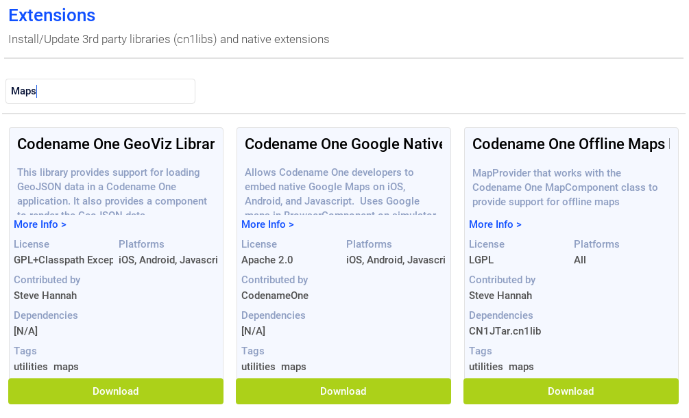
The one in the middle "Codename One Google Native", is the Google maps lib that we want.
Press the "Download" button.
You should see a progress indicator while performs the installation.
Installing Legacy cn1libs
The recommended approach for installing add-ons to your project is to use the control center, or by adding the maven dependency to your common/pom.xml file. However, in some situations you may not be able to use those methods. E.g. If you have a legacy cnlib file that you need to use in your app, and it isn’t available on Maven central or the control center.
In cases like this you can use the install-cn1lib Maven goal to install it as follows:
mvn cn1:install-cn1lib -Dfile=/path/to/yourlibrary.cn1libUpdating Codename One
Codename One releases new versions weekly on Maven central. It is recommended that you stay up to date with the latest version as much as possible to ensure compatibility with the Codename One build server, which is always running the latest version.
You can use the update goal to update both the Codename One libraries, and the Codename One dependencies in your project.
e.g.
mvn cn:updateCLI
Alternatively you can use the run.sh/run.bat script to run this goal as follows:
./run.sh update|
Note
|
Use run.bat update instead on Windows
|
IntelliJ
Alternatively you can click on the "Configuration" menu, and select "Tools" > "Update Codename One" as shown here:
The press the button.
NetBeans
Alternatively you can right click on the project in the project inspector, and select "Run Maven" > "Update Codename One" as shown here:
Then press the button.
Manually Updating the pom.xml file
You can also update your Codename One dependencies manually by modifying the `cn1.version` and `cn1.plugin.version` properties defined in your project's `pom.xml` file.
E.g. Open the pom.xml file, and look for the following:
<cn1.plugin.version>7.0.13</cn1.plugin.version>
<cn1.version>7.0.13</cn1.version>Change these values to reflect the latest version of the codenameone-maven-plugin found here.
|
Note
|
Updating the cn1.plugin.version and cn1.version properties manually will update the Maven dependencies for your project but it won’t update the other Codename One tools such as the GUI builder, and the Build Server Client, which are managed outside of Maven. You should use the Update Codename One (update) as described at the beginning of this section to perform a "full" update.
|
Creating Project Templates
A project template is a Codename One application project that can be used as a starting point for building a Codename One application. Codename One initializr uses project templates to generate starter projects for Codename One applications. You can also use the Generate App Project (generate-app-project) goal to generate starter projects from templates directly in Maven.
Any Codename One project can be converted into a project template.
Converting a Codename One Application Project into a Project template
If you have an existing maven Codename One application project, you can convert it into a project template by adding a file named generate-app-project.rpf in the root directory of the project.
The contents of this file should look like:
mainName=$YOUR_PROJECT_MAIN_NAME
packageName=$YOUR_PROJECT_PACKAGE_NAME
[dependencies]
====
... YOUR PROJECT MAVEN DEPENDENCIES ...
====Where you make the following substitutions:
- $YOUR_PROJECT_MAIN_NAME
-
This should be the value of the
codename1.mainNameproperty in the project’scodenameone_settings.propertiesfile. - $YOUR_PROJECT_PACKAGE_NAME
-
This should be the value of the
codename1.packageNameproperty in the project’scodenameone_settings.propertiesfile. - … YOUR PROJECT MAVEN DEPENDENCIES …
-
Paste any maven dependencies that the project requires into this section.
See Sample generate-app-project.rpf file for a more concrete example of the generate-app-project.rpf.
Test your Project Template
You can test your project template by using it as the sourceProject parameter for the generate-app-project goal. See Generate App Project (generate-app-project).
Add Your Template to Codename One Intializr
If you have a project template that you want to share with the community, please file an issue in the Codename One issue tracker with a link to a Github Repository of your project template, and request to have it added Codename One initializr.
Codename One Libraries
A Codename One Library (cn1lib) is a module that can be distributed and added to Codename One applications to add functionality. It can be distributed as a self-contained bundle (a file with the .cn1lib extension), or deployed on Maven central to be included in application projects as a pom dependency.
A cn1lib may contain any of the following:
-
Cross-platform Java classes.
-
Native code that targets specific platforms.
-
Build hints, which will affect how projects will be built that include this library. These can contain things like gradle dependencies on Android, cocopods dependencies on iOS, and other hints to affect the build-server process.
-
CSS files.
Creating a Library Project
Use the cn1lib-archetype for generating a new Codename One library project as follows:
CLI
mvn archetype:generate \
-DarchetypeArtifactId=cn1lib-archetype \
-DarchetypeGroupId=com.codenameone \
-DarchetypeVersion=LATEST \
-DgroupId=com.example.mylib \
-DartifactId=mylib \
-Dversion=1.0-SNAPSHOT \
-DinteractiveMode=falseIn the above snippet you would change the groupId, artifactId, and version properties to reflect your project settings.
|
Tip
|
You can run the And then follow the prompts. Or you could enter: And follow the prompts. This will, result in fewer prompts because you have already specified the archetype to use. |
This will create a new project for you in the current directory, in a newly created directory named after the artifactId that you entered.
IntelliJ
-
Select "File" > "New Project"…
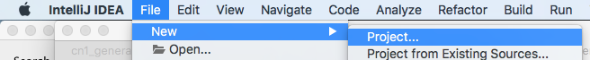 -
Select "Maven" in the left menu.
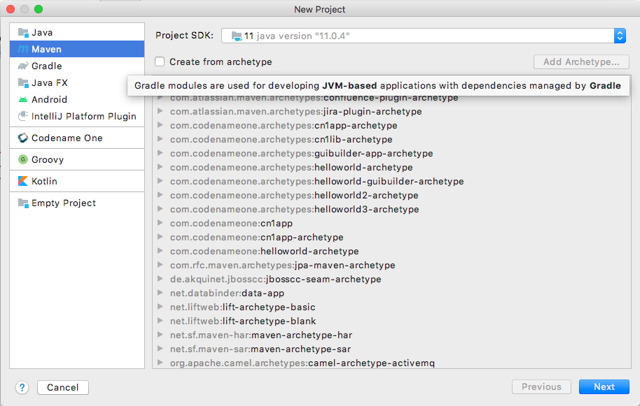 -
Check the "Create from Archetype" checkbox. 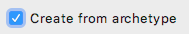. This should allow you to choose from of archetypes that are already known to IntelliJ.
-
If you don’t see an option for "com.codenameone:cn1lib-archetype", then IntelliJ doesn’t know about it yet. If, however you do see this option, you can skip to the next step. Press the "Add Archetype…" button. This will display a dialog for you to enter the details of the archetype.
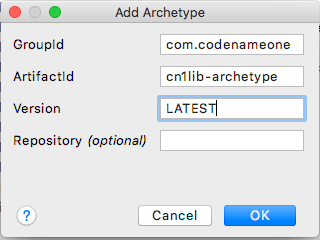Fill in this dialog as shown in the above image. Specifically
groupId="com.codenameone",artifactId="cn1lib-archetype", andversion="LATEST"Then press "OK".
-
Select the option that says "com.codenameone:cn1lib-archetype"
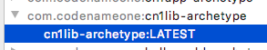Then press "Next"
-
This will display a form where you can enter the details of your project such as its location (where you want to create the project folder), the name, the artifact ID, and the groupID. Fill in this form as you see fit.
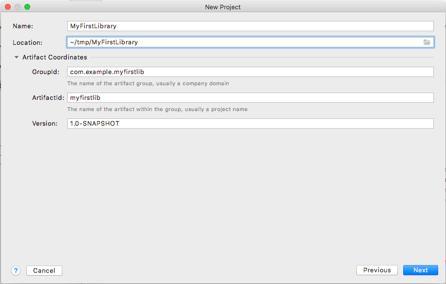Then click "Next"
-
The final form in this wizard summarizes the project details and gives you an opportunity to add additional properties to pass to the
archetype:generategoal. In our case we don’t need to add any additional properties. If the information looks correct, you can just press "Next".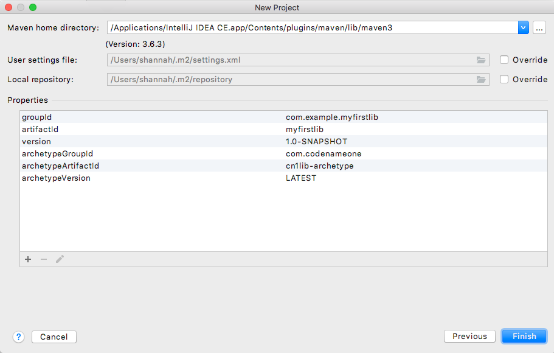
At this point you will be prompted to open the project.
NetBeans
-
Select "File" > "New Project…"
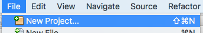 -
In the "New Project" dialog, select "Java with Maven" in the left panel, and "Project from Archetype" in the right panel, as shown below.
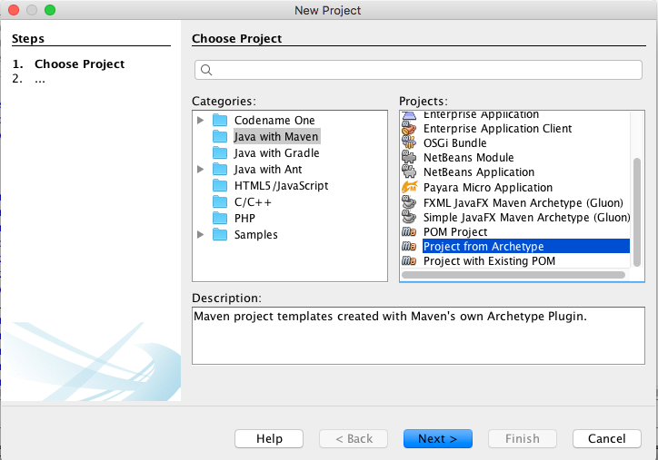Then press "Next"
-
This will bring you to the "Maven Archetype" dialog as shown below:
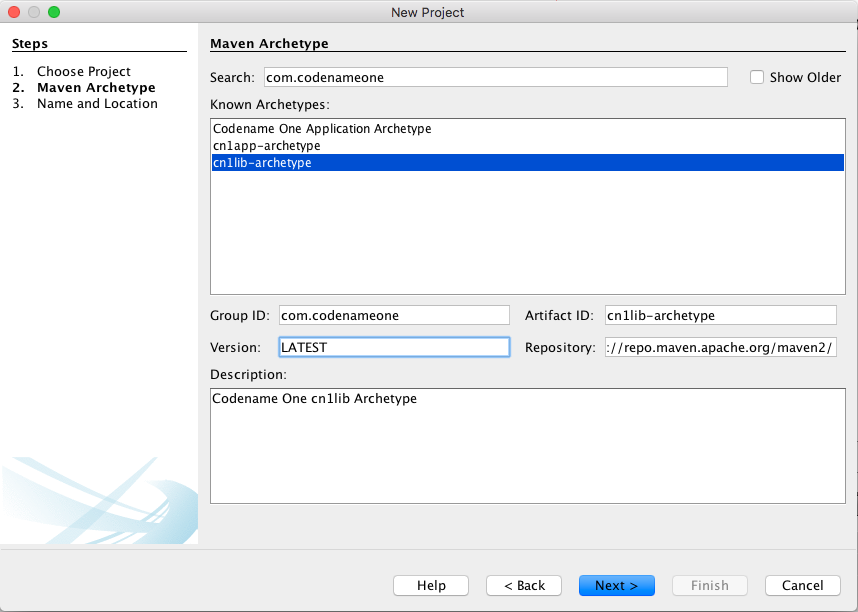Enter "com.codenameone" or "cn1lib-archetype" into the search field. Then select "cn1lib-archetype" in the "Known archetypes:" panel. This will prefill the Group ID, Artifact ID and Version fields for you. You may want to change Version to LATEST to ensure that it tries to use the latest available version of the archetype.
Then click "Next"
-
This will bring you to the "Name and Location" panel of the wizard.
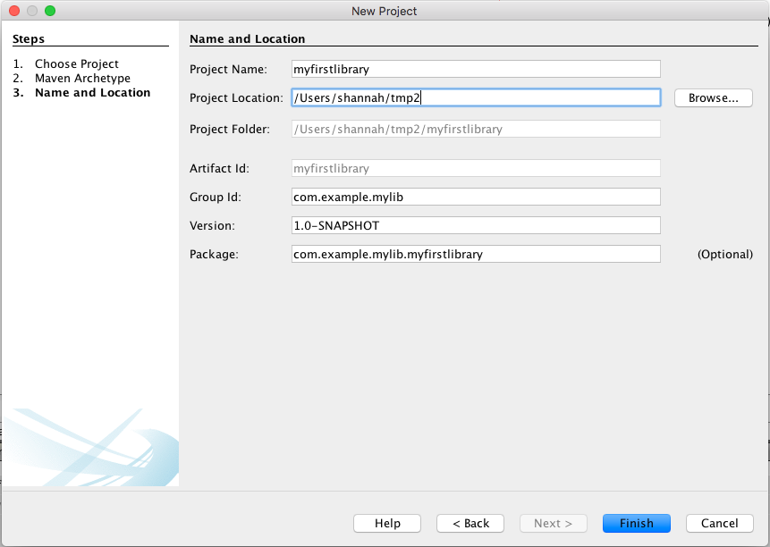Enter in the project name (which you’ll be forced to use as the artifact ID also), project location, groupId, version, and package. The "Package" is unimportant here as it isn’t used anywhere in the project.
Once you have entered the information to your liking press the "Finish" button.
This will create a new libary project for you at the location you specified.
Project Structure
Let’s take a look at the project that was created. It is a multi-module Maven project with the following modules:
- common
-
The module where you’ll add all of your cross-platform code and CSS, and build hint configuration. This module is in the "common" directory of the main project.
- javase
-
The module where you can implement native interfaces for the JavaSE platform. This module is in the "javase" directory of the main project.
- ios
-
The module where you can implement native interfaces for the iOS platform. This module is in the "ios" directory of the main project.
- android
-
The module where you can implement native interfaces for the Android platform. This module is in the "android" directory of the main project.
- javascript
-
The module where you can implement native interfaces for the Javascript platform. This module is in the "javascript" directory of the main project.
- lib
-
The library module which includes all of the other modules as dependencies, and can be used as a pom dependency in Codename One application projects that wish to use this library. This module is in the "lib" directory of the main project.
- tests
-
An application project for writing unit tests against your library. This module is in the "tests" directory of the main project.
IntelliJ
The project inspector will look like:
This top-level view of the module structure may seem daunting. Most of your development will occur inside the "common" module. If we expand that module it will look more familiar to developers who have used the old Ant project structure:
Your cross-platform Java source would go in the common/src/main/java directory. Your CSS files go in the common/src/main/css directory.
NetBeans
The project inspector will look like:
This top-level view of the modules doesn’t provide a clear view of the project landscape, however, since 99% of your development will occur inside the common submodule. Let’s open that "common" sub-module project as well and take a peek.
Right click on the "Common" sub-module, and select "Open Project" as shown below:
With the common subproject open, the project inspector will look like:
In this screenshot I have expanded "Source Packages" and "Other Sources/css" to highlight where your Java source files and CSS source files will be located.
The project inspector hides a few important files, however, so here is a screenshot of the File inspector for the common project:
CLI
If we do a file listing on the project directory, it shows the following:
Steves-Mac-Pro:MyFirstLibrary shannah$ find .
.
./win
./win/pom.xml
./win/src
./win/src/main
./win/src/main/csharp
./win/src/main/csharp/com
./win/src/main/csharp/com/example
./win/src/main/csharp/com/example/myfirstlib
./tests
./tests/pom.xml
./tests/javase
./tests/javase/pom.xml
./tests/common
./tests/common/codenameone_settings.properties
./tests/common/pom.xml
./tests/common/nbactions.xml
./tests/common/src
./tests/common/src/test
./tests/common/src/test/java
./tests/common/src/test/java/com
./tests/common/src/test/java/com/example
./tests/common/src/test/java/com/example/myfirstlib
./tests/common/src/test/java/com/example/myfirstlib/MyFirstTest.java
./tests/common/src/main
./tests/common/src/main/css
./tests/common/src/main/css/theme.css
./tests/common/src/main/java
./tests/common/src/main/java/com
./tests/common/src/main/java/com/example
./tests/common/src/main/java/com/example/myfirstlib
./tests/common/src/main/java/com/example/myfirstlib/LibraryTests.java
./tests/cn1libs
./tests/.mvn
./tests/.mvn/jvm.config
./pom.xml
./javase
./javase/pom.xml
./javase/src
./javase/src/main
./javase/src/main/java
./javase/src/main/java/com
./javase/src/main/java/com/example
./javase/src/main/java/com/example/myfirstlib
./ios
./ios/pom.xml
./ios/src
./ios/src/main
./ios/src/main/objectivec
./common
./common/codenameone_library_required.properties
./common/pom.xml
./common/codenameone_library_appended.properties
./common/src
./common/src/test
./common/src/test/java
./common/src/test/java/com
./common/src/test/java/com/example
./common/src/test/java/com/example/myfirstlib
./common/src/test/java/com/example/myfirstlib/MyLibraryTest.java
./common/src/main
./common/src/main/css
./common/src/main/css/theme.css
./common/src/main/java
./common/src/main/java/com
./common/src/main/java/com/example
./common/src/main/java/com/example/myfirstlib
./common/src/main/java/com/example/myfirstlib/MyLibrary.java
./android
./android/pom.xml
./android/src
./android/src/main
./android/src/main/java
./android/src/main/java/com
./android/src/main/java/com/example
./android/src/main/java/com/example/myfirstlib
./lib
./lib/pom.xml
./MyFirstLibrary.iml
./javascript
./javascript/pom.xml
./javascript/src
./javascript/src/main
./javascript/src/main/javascript
./.idea
./.idea/encodings.xml
./.idea/jarRepositories.xml
./.idea/.gitignore
./.idea/workspace.xml
./.idea/misc.xml
./.idea/compiler.xmlThis may seem daunting at first, but it is important to realize that 99% of the time, you’ll be working in the "common" module - most of the other stuff is boilerplate.
Important Files
There are a few key files in this project that you’ll be using more than the others.
- pom.xml
-
The maven configuration file of the root module is where you will set project-wide properties such as the
cn1.versionproperty, which specifies the version of the Codename One libraries that the module should be compiled against. Periodically, you’ll want to update thecn1.versionproperty to point to the latest version.When/if you decide to deploy your module to Maven central, you’ll need to add additional deployment-related settings in this file.
- common/pom.xml
-
The maven configuration file for the "common" module, which will contain most of your cn1lib’s soure code, CSS files, and properties files. If your library depends on other libraries or jar files, you’ll usually be adding them as dependencies in this file, and not the root pom.xml file.
- common/codenameone_library_appended.properties
-
This file is where you can specify properties that should be merged with the codenameone_settings.properties of application projects that include this library as a dependency. This is where you would add, for example, gradle dependencies required for the Android builds, or cocoapods dependencies that are required for iOS builds.
- common/codenameone_library_required.properties
-
This file allows you to specific build hints that must be present in application projects that include this library. If this libary requires a particular android build tools version, or a specific Java version, then those requirements should be specified in this file.
Important Directories
As mentioned previously, 99% of all of your development will likely occur inside the "common" module. The other modules are mostly for native implementations of Native interfaces.
- common/src/main/java
-
This is where your cross-platform Java source files will be placed.
- common/src/main/css
-
If your library uses CSS, this is where all CSS-related files will be placed.
- common/src/main/resources
-
Other non-java resources that you want to have included in the classpath.
Building the Library
CLI
To build the library, simply run the "install" goal on the root module as follows:
mvn installIntelliJ
Press the "build" button on the toolbar.
NetBeans
Right click on the "root" module in the project explorer and select "Build".
|
Important
|
You must build the root module and not one of the submodules. |
Alternatively you could have just selected the "root" module in the project explorer and pressed the "build" 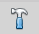 button on the toolbar.
Building the Legacy .cnlib File
When using the Maven build tool, we no longer require the .cn1lib file at all. Your library projects can be handled entirely via Maven’s dependency mechanism. The preferred way to distribute your libraries is on Maven central, and the preferred way to add a library to an application is via a Maven "pom" dependency.
That being said, you may still want to distribute your library as a .cn1lib file for the sake of users who are still using Ant as their build tool. For that reason, when you bulid a library project, the cn1lib is automatically built as well. After running a build, you can look in the common/target directory and find your .cn1lib file ready to be distributed.
Editing Java Code
In order to get acquainted with our project, let’s add a "Hello World" java class that we want to make available as part of our cn1lib.
Add a new class inside the "common/src/main/java" directory with package "com.example", and name "HelloWorld". Enter the following contents into the class:
package com.example;
public class HelloWorld {
public static void helloWorld() {
System.out.println("Hello world");
}
}Now build the library again. (See Building the Library).
Using the Library in an Application Project
Now that we’ve built our library and added a Java class, let’s try adding it as a dependency in an application project. If you haven’t yet created an application project, do that now. See Creating a New Project for instructions on creating a new application project.
Open the common/pom.xml file of your application project.
|
Important
|
Make sure you’re editing the common/pom.xml file of the application project and not the library project. |
This file may look a little hairy as there’s a lot of configuration in there. We’ll be looking for the <dependencies> section.
The common/pom.xml file will have more than one <dependencies> tag, as it includes some profiles handling things like kotlin support. There will be one particular <dependencies> tag that includes a comment like
<!-- INJECT DEPENDENCIES -->You should add your dependencies just before this comment.
For the sake of this example, suppose our library was set up with the following coordinates:
groupId: |
|
artifactId: |
|
version: |
|
In this case we would add the following XML snippet to the <dependencies> section of our application’s common/pom.xml file:
<dependency>
<groupId>com.example</groupId>
<artifactId>mylib-lib</artifactId>
<version>1.0-SNAPSHOT</version>
<type>pom</type>
</dependency>|
Important
|
Notice that we appended "-lib" to the artifactId. This is because we are including the "lib" module of our library project as the dependency, and not the root module. Also the <type>pom</type> is important as it indicates that this is a pom dependency - not a regular jar dependency.
|
Now let’s try it out. Try adding the following code to your application project’s main class (or anywhere in the application project, for that matter):
com.example.HelloWorld.helloWorld();And build the project. The project should build OK, and if you run it, you should see that the helloWorld() method works as designed.
Distributing Your Library
The recommended way to distribute your library is on Maven central. That way users will be able to install your library by copying and pasting a familiar <dependency> snippet into their pom.xml file.
Appendix A: Project Archetypes
Codename One Application Project Archetype (cn1app-archetype)
The cn1app-archetype is the basis for all maven Codename One application projects. It provides a multimodule project with the following modules:
See Getting Started with the Bare-Bones Java App Template for details on using this archetype.
Also see Bare-bones Java Project for an example using this archetype from the command-line to create a bare-bones Java project.
Codename One Library Project Archetype (cn1lib-archetype)
The cn1lib-archetype provides a project for building Codename One libraries. See Codename One Libraries for details on using this archetype.
Appendix B: Maven Goals
Codename One Build (build)
The build goal is used to send builds to the Codename One build server. It also supports a few local build targets, such as ios-source, which generates an Xcode project, and android-source which generates an Android gradle project.
This goal is bound to the package phase of the Codename One Application Project Archetype (cn1app-archetype), so you generally don’t need to run this directly.
Example
mvn cn1:build -Dcodename1.platform=javase -Dcodename1.buildTarget=mac-os-x-desktopProperties
- codename1.platform
-
Specifies the platform to build for. Values include javase, android, ios, javascript, and win.
- codename1.buildTarget
-
The build target. Different platforms support different build sets of build targets.
Build Target Platform Description mac-os-x-desktop
javase
Sends a Mac desktop build to the Codename One build server.
windows-desktop
javase
Sends a Windows desktop build to the Codename One build server.
android-device
android
Sends an Android build to the Codename One build server.
android-source
android
Generates an Android Gradle project locally that can be opened and built in Android Studio.
ios-device
ios
Sends an iOS build to the Codename One build server.
ios-source
ios
Generates an iOS Xcode project locally that can be opened and built in Xcode.
javascript
javascript
Sends a Javascript build to the Codename One build server.
- automated
-
Set to
trueto submit build as an automated build. When using this flag, the goal will wait for the build server to complete the build, then download it and save it in the target directory (of the associated module) using standard maven artifact file naming conventions. This allows you to set up automated CI workflows more easily.Default value is
false.Requires a Codename One enterprise subscription.
- open
-
If set to
true, this will automatically open the generated gradle or xcode project in Android studio or Xcode. Only applicable to theios-sourceandandroid-sourcebuildTargets.Default is
false
Generate Legacy cn1lib (cn1lib)
This goal generates a legacy .cn1lib file. It is bound to the package phase of cn1lib-archetype projects so you generally will never need to run this goal directly.
Output Location
This will output the cn1lib file inside the common/target directory of the root multimodule maven project.
Compliance Check (compliance-check)
Checks API usage in the project’s "common" module to ensure that it doesn’t use any classes or methods that aren’t supported by Codename One.
This goal is bound to the process-classes phase of both Codename One Application Project Archetype (cn1app-archetype) projects and Codename One Library Project Archetype (cn1lib-archetype) projects, so you generally shouldn’t ever need to run this goal directly.
Compile CSS (css)
Compiles the project’s CSS files, generating a theme.res file which is placed in the build/classes directory.
This goal is bound to the process-classes phase of Codename One Application Project Archetype (cn1app-archetype) projects, so you generally shouldn’t need to run this goal directly.
Generate App Project (generate-app-project)
Generates a Maven project using the Codename One Application Project Archetype (cn1app-archetype) as a basis, and applying an optional project template. This goal can also be used to migrate legacy Codename One Ant-based Application projects into maven.
Usage Example
This goal should not be run inside an existing Maven project directory. It will output a project into a directory named after the artifactId parameter.
Because there is no existing project, you will need to provide the full maven path to the goal.
mvn com.codenameone:codenameone-maven-plugin:$CN1VERSION:generate-app-project \
-DsourceProject=/path/to/my/ProjectTemplate \
-DgroupId=com.example \
-DartifactId=myapp \
-Dcn1Version=$CN1VERSION|
Note
|
Substitute the latest Codename One plugin version for the $CN1VERSION in the above example.
|
In the above example, assuming all went well, it would output your project into a directory named myapp.
Parameters
- cn1Version
-
The Codename One version that you want to use for the project. This will be manifested as the
cn1.versionandcn1.plugin.versionproperties in the common/pom.xml file of the generated project. If omitted it will default to the cn1Version that is hard-coded in the cn1app-archetype artifact. - sourceProject
-
The path to an optional project template to use. This may be either a legacy Ant project, or a Maven project that follows the structure of Codename One Application Project Archetype (cn1app-archetype).
- artifactId
-
The
artifactIdto use for the new project. - groupId
-
The
groupIdto use for the new project. - version
-
The
versionto use for the new project. Optional.Default value is "1.0-SNAPSHOT"
- packageName
-
The package name to use for the new project.
This is only necessary if the
sourceProjectproperty is a Maven project. If thesourceProjectis a legacy Ant project, then this property is ignored. - mainName
-
The main class name to use for the new project.
This is only necessary if the
sourceProjectproperty is a Maven project. If thesourceProjectis a legacy Ant project, then this property is ignored.
Migrating Legacy Ant Projects into Maven
When providing an Ant-based Codename One application project as the sourceProject parameter, this goal will simply generate an equivalent Maven project to the Ant project, with the same settings and sources.
See Migrating an Existing Project for examples using this goal to migrate an existing project into Maven.
Project Templates
When using a Codename One Application Project Archetype (cn1app-archetype) maven project as the sourceProject parameter, the project will be treated project template template, and perform some basic processing of the source files as necessary convert the template into a real project. This includes replacing all occurrences of ${mainName} and ${packageName} in project sources with the value of the mainName and packageName parameters provided on the command-line.
Additionally any occurrences of mainName and packagePath in file or directory names will be swapped with the values of mainName and packagePath (which is automatically derived from packageName by substituting '.' with file separators).
The generate-app-project.rpf File
The (optional) secret sauce that differentiates a regular Maven project from a Maven project template is the existence of a generate-app-project.rpf file in the root project directory. This file is in rich property file format, and allows you to define a minimal amount of configuration details that the generate-app-project goal needs to convert the template into a real project.
This file may contain the following properties:
- template.mainName
-
The name of the main class that is currently used in this project. This property is not required if the project is already using the
mainNameplaceholder in the file name that contains the main class, and the${mainName}placeholder in any source code referring to the main class.Often times it is just easier to specify this property here rather than injecting placeholders into the template source base, because that way the template itself can be used as a valid project.
- template.packageName
-
The package name for the app. This property is not required if the project is already using the
packagePathplaceholder in directories containing your main package files, and the${packageName}placeholder in any source code that refers to the main package.Often times it is just easier to specify this property here rather than injecting placeholders into the template source base, because that way the template itself can be used as a valid project.
- template.type
-
Either
mavenorant, depending on the project type. - dependencies
-
An XML snippet containing any additional Maven dependencies that should be added to the project. This is handy of the project template relies on other cn1libs that are on Maven central.
Sample generate-app-project.rpf file
template.mainName=MyApp
template.packageName=com.example
template.type=maven
[dependencies]
====
<dependency>
<groupId>com.codenameone</groupId>
<artifactId>googlemaps-lib</artifactId>
<version>1.0.1</version>
<type>pom</type>
</dependency>
====Sample: The Bare-bones Kotlin App Project
As a more complete example of a project template, see the generate-app-project.rpf file in the bare-bones kotlin app template.
This is the template that is used in Codename One initializr for the Bare-bones Kotlin project.
Create GUI Form (create-gui-form)
The create-gui-form goal will generate a GUI form that can be edited in the GUI builder.
Basic Usage Example
mvn cn1:create-gui-form -DclassName=com.example.MyFormThe above example will generate a GUIBuilder form with the provided class name. It effectively generates two files:
-
common/src/main/guibuilder/com/example/MyForm.gui -
common/src/main/java/com/example/MyForm.java
|
Note
|
The paths above assume that this goal was run from the root multimodule maven project. If it were run inside the "common" submodule, then the files would simply be generated in the "src/main/…" directory of that module. (It would try to create yet another "common" submodule). See Project Structure. |
You can then open the GUI builder to edit this form using the cn1:guibuilder goal.
mvn cn1:guibuilder -DclassName=com.example.MyFormParmeters
- className
-
(Required) The class name of the form that you wish to generate. E.g
com.example.MyForm. - guiType
-
The type of GUI component to generate. Supports "Form", "Dialog", and "Container". Default value is "Form"
- autoLayout
-
Whether to use autolayout. This is boolean (true/false), and the default value is
true.
Generate cn1lib Project (generate-cn1lib-project)
Generates a Maven cn1lib project (using the cn1lib-archetype) given an ANT cn1lib project as a template.
This is to assist in migrating Ant projects to Maven projects. This won’t make any changes to the source Ant project. It simply generates a new project using the Codename One Library Project Archetype (cn1lib-archetype) and copies all of files and configuration from the source project, into the new project.
Usage Example
|
Important
|
This goal is not run in an existing maven project directory, therefore we need to include the absolute Maven coordinates for the goal. |
Suppose we have a Ant Codename One library project at /path/to/MyLegacyAntLibraryProject and we want to convert it to a Maven project.
We can run the generate-cn1lib-project goal as follows:
cn1 com.codenameone:codenameone-maven-plugin:$CN1VERSION:generate-cn1lib-project \
-DsourceProject=/path/to/MyLegacyAntLibraryProject \
-DgroupId=com.example \
-DartifactId=my-maven-lib \
-Dversion=1.0-SNAPSHOT|
Note
|
Make sure you substitute the latest codenameone-maven-plugin version for the $CN1VERSION in this command.
|
If all goes well, you should find a new maven project generated in the "my-maven-lib" directory (named after the artifactId that you specified).
To test that the project was generated successfully, try opening the resulting project in your IDE or simply run its "install" goal on the command-line.
E.g.
cd my-maven-lib
mvn installAfter running the "install" command, you should be able to add your library as a dependency to a Codename One Application Project Archetype (cn1app-archetype) project using the following dependency:
<dependency>
<groupId>com.example</groupId>
<artifactId>my-maven-lib-lib</artifactId>
<version>1.0-SNAPSHOT</version>
<type>pom</type>
</dependency>|
Important
|
Notice that the artifactId has an extra "-lib" appended. I.e. it is <artifactId>my-maven-lib-lib</artifactId> and not <artifactId>my-maven-lib</artifactId>. This is because the artifactId that you specify in the generate-cn1lib-project goal is used for the "root" module of the multimodule maven project. The actual "lib" project that you can use as a Maven dependency is the "lib" submodule, which uses the specified artifactId with a "-lib" suffix.
|
See Codename One Libraries for more information about the resulting maven library project.
Properties
- sourceProject
-
The path to the legacy Ant project that you want to convert to a Maven project.
- groupId
-
The maven
groupIdto use for the resulting project. - artifactId
-
The maven
artifactIdto use for the resulting project. - version
-
The maven
versionto use for the resulting project. Default "1.0-SNAPSHOT"
Generate Desktop App Wrapper (generate-desktop-app-wrapper)
Generates the bootstrapping wrapper class for the JavaSE desktop app. This is used by the javase module of Codename One Application Project Archetype (cn1app-archetype) projects.
Generally you shouldn’t need to call this goal directly.
Generate GUI Sources (generate-gui-sources)
Generates Java sources from the Codename One GUI builder files. This goal is bound to the process-sources phase of Codename One Application Project Archetype (cn1app-archetype) projects, so you generally should never need to run this goal explicitly.
Generate Native Interfaces (generate-native-interfaces)
Generates stub implementations for all native interfaces defined in the project. This won’t overwrite any existing implemetations that may exist.
You should run this goal explicitly after you create a native interface in your class.
See the Codename One Developer guide section on native interfaces for more information on creating native interfaces.
Usage Example
Suppose we have created a native interface as the Java interface com.mycompany.myapp.MyNative, as described in the example in native interfaces.
After creating this (and possibly other) native interfaces in our project, run the generate-native-interfaces Maven goal as follows:
mvn cn1:generate-native-interfacesThis will generate the following files (if they don’t exist yet).
- javase
-
javase/src/main/java/com/mycompany/myapp/MyNativeImpl.java - ios
-
-
ios/src/main/objectivec/com_mycompany_myapp_MyNativeImpl.h -
ios/src/main/objectivec/com_mycompany_myapp_MyNativeImpl.m
-
- android
-
android/src/main/java/com/mycompany/myapp/MyNativeImpl.java - windows (uwp)
-
win/src/main/csharp/com/mycompany/myapp/MyNativeImpl.cs - javascript
-
javascript/src/main/javascript/com_mycompany_myapp_MyNativeImpl.js
Open and edit these files to implement your native interface methods as desired.
GUIBuilder Goal (guibuilder)
The guibuilder goal opens the Codename One GUI builder to edit a specified GUIBuilder form.
Usage
mvn cn1:guibuilder -DclassName=com.example.MyFormThis will open the gui builder to edit the form whose class is com.example.MyForm.
Parameters
- className
-
The fully-qualified name to the form class that you wish to edit. This must have been previously generated using Create GUI Form (
create-gui-form).
Generate Archetype (generate-archetype)
|
Note
|
This goal is not currently used. It was originally developed as a means of simplifying the maintenance of multiple application archetypes, but this approach was later abandoned in favor of application project templates. |
The generate-archetype mojo will generate a new archetype maven project based on an existing archetype project. It is designed to facilitate the maintenance of several similar archetypes which differe only in some dependencies or default project source code. It takes as input a template file which references the base archetype project and specifies what to customize.
Example Usage
mvn cn1:generate-archetype -Dtemplate=/path/to/mytemplate.java
Parameters
- template
-
Required. The path to a template file that should be used to generate the archetype project.
- outputDir
-
Optional. The output directory where the archetype project should be written to. The project will be created at
outputDir/artifactId, where theartifactIdis as specified in the[archetype]section of the template. By default this will be the current working directory.
|
Note
|
This goal does not require a project in order to run. You can run it directly using the full goal coordinates: mvn com.codenameone:codenameone-maven-plugin:7.0-SNAPSHOT:generate-archetype \
-Dtemplate=/path/to/mytemplate.java
|
Template Syntax
Here is a sample template file:
#set( $symbol_pound = '#' )
#set( $symbol_dollar = '$' )
#set( $symbol_escape = '\' )
package ${package};
/*
[archetype] (1)
----
extends=../cn1app-archetype (2)
groupId=com.codenameone.archetypes
artifactId=helloworld2-archetype
version=7.0-SNAPSHOT
----
[dependencies] (3)
----
<dependency>
<groupId>com.codenameone.libs</groupId>
<artifactId>filechooser-lib</artifactId>
<version>1.0-SNAPSHOT</version>
<type>pom</type>
</dependency>
----
*/
import static com.codename1.ui.CN.*;
import com.codename1.ui.*;
import com.codename1.ui.layouts.*;
import com.codename1.io.*;
import com.codename1.ui.plaf.*;
import com.codename1.ui.util.Resources;
/**
* This file was generated by <a href="https://www.codenameone.com/">Codename One</a> for the purpose
* of building native mobile applications using Java.
*/
public class ${mainName} {
private Form current;
private Resources theme;
public void init(Object context) {
// use two network threads instead of one
updateNetworkThreadCount(2);
theme = UIManager.initFirstTheme("/theme");
// Enable Toolbar on all Forms by default
Toolbar.setGlobalToolbar(true);
// Pro only feature
Log.bindCrashProtection(true);
addNetworkErrorListener(err -> {
// prevent the event from propagating
err.consume();
if(err.getError() != null) {
Log.e(err.getError());
}
Log.sendLogAsync();
Dialog.show("Connection Error", "There was a networking error in the connection to " + err.getConnectionRequest().getUrl(), "OK", null);
});
}
public void start() {
if(current != null){
current.show();
return;
}
//WebSocket sock;
Form hi = new Form("Hi World", BoxLayout.y());
hi.add(new Label("Hello World"));
hi.show();
}
public void stop() {
current = getCurrentForm();
if(current instanceof Dialog) {
((Dialog)current).dispose();
current = getCurrentForm();
}
}
public void destroy() {
}
}-
The
[archetype]section specifies details about the archetype project to be generated. E.g. thegroupId,artifactId, etc… -
The
extendsproperty in the[archetype]section is required, and points to the location of the archetype project that this template is based on. Path is relative to the location of the template file. -
The
[dependencies]section includes content that should be injected into the<dependencies>section of the pom.xml file. Note that this is not the pom file for the archetype project itself. It is the pom.xml file for the project that the archetype project is to generate.
Notice that the above template is velocity template for a java file. It will be used as the source code for the main class in the resulting project. It is a velocity template because maven’s archetype:generate goal will process it to replace properties such as package and the main class name.
Template Sections
- archetype
-
This is a required section and specifies both the location of the base archetype project from which this project is to be derived, and the the coordinates of the output archetype project, such as
groupId,archetypeId, andversion.Example
[archetype] ---- extends=../cn1app-archetype groupId=com.codenameone.archetypes artifactId=helloworld2-archetype version=7.0-SNAPSHOT ----Properties
- extends
-
Required. The path to the archetype project that this is based on. This should usually be the
cn1app-archetypeproject as it includes the placeholders that this generator relies on for injecting content into the pom.xml file and its project structure was used as a basis for developing this mojo. - groupId
-
The groupID of the resulting archetype project. You can alternatively use the
idproperty to specifygroupId,artifactIdandversionin a single string. - artifactId
-
The artifactId of the resulting archetype project. You can alternatively use the
idproperty to specifygroupId,artifactIdandversionin a single string. - version
-
The version of the resulting archetype project. You can alternatively use the
idproperty to specifygroupId,artifactIdandversionin a single string. - id
-
A colon-separated string in the format
groupId:artifactId:versionthat can be used as an alternative togroupId,artifactId, andversion. - parentGroupId
-
If the output archetype project should be part of a multi-module project, then this will specify the parent
groupIdfor the<parent>tag in the pom.xml file. - parentArtifactId
-
If the output archetype project should be part of a multi-module project, then this will specify the parent
archetypeIdfor the<parent>tag in the pom.xml file. - parentVersion
-
If the output archetype project should be part of a multi-module project, then this will specify the parent
archetypeIdfor the<parent>tag in the pom.xml file. - parent
-
A colon-delimited string in the format
parentGroupId:parentArtifactId:parentVersionthat can be used as an alternative to theparentGroupId,parentArtifactId, andparentVersionproperties separately.
- dependencies
-
Specify additional dependencies that should be injected into the
<dependencies>section of the pom.xml file for the common module of the maven project that the archetype will generate. The content of this section will be injected into thesrc/main/resources/archetype-resources/common/pom.xmlof the archetype project.Example
[dependencies] --- <dependency> <groupId>com.codenameone.libs</groupId> <artifactId>filechooser-lib</artifactId> <version>1.0-SNAPSHOT</version> <type>pom</type> </dependency> --- - css
-
CSS content that should be injected into the theme.css file of the project. This CSS will be injected into the
src/main/resources/archetype-resources/common/src/main/css/theme.cssfile of the archetype project.Example
[css] --- #Constants { includeNativeBool: true; } Button { color:green; border:1px solid green; border-radius: 2mm; margin: 5mm; } --- - properties
-
Properties that should be appended to the
codenameone_settings.propertiesfile. These will be added to thesrc/main/resources/archetype_resources/common/codenameone_settings.propertiesfile of the archetype project.Example
[properties] --- codename1.arg.win.desktop-vm=zuluFx8-32bit codename1.arg.win.desktopExtractDll=true codename1.arg.win.launchOnStart=true codename1.arg.win.runAfterInstall=true --- - files
-
Files contains a list of files that should be created in the archetype project. All file paths are relative to the "common" project root directory. Each path should have a corresponding section with the heading
[file:path/to/file].Example
[files] ---- src/main/guibuilder/__mainName__MainForm.gui src/main/java/__mainName__MainForm.java ---- [file:src/main/guibuilder/__mainName__MainForm.gui] ---- <?xml version="1.0" encoding="UTF-8"?> <component type="Form" layout="LayeredLayout" layeredLayoutPreferredWidthMM="0.0" layeredLayoutPreferredHeightMM="0.0" autolayout="true" title="${mainName}MainForm" scrollableY="true" name="${mainName}MainForm"> <component type="Button" text="Click Me" name="Button"> <layoutConstraint insets="auto auto auto auto" referenceComponents="-1 -1 -1 -1" referencePositions="0.0 0.0 0.0 0.0" /> </component> </component> ---- [file:src/main/java/__mainName__MainForm.java] ---- package ${package}; public class ${mainName}MainForm extends com.codename1.ui.Form { public ${mainName}MainForm() { this(com.codename1.ui.util.Resources.getGlobalResources()); } public ${mainName}MainForm(com.codename1.ui.util.Resources resourceObjectInstance) { initGuiBuilderComponents(resourceObjectInstance); } //-- DON'T EDIT BELOW THIS LINE!!! protected com.codename1.ui.Button gui_Button = new com.codename1.ui.Button(); // <editor-fold defaultstate="collapsed" desc="Generated Code"> private void initGuiBuilderComponents(com.codename1.ui.util.Resources resourceObjectInstance) { setLayout(new com.codename1.ui.layouts.LayeredLayout()); setInlineStylesTheme(resourceObjectInstance); setScrollableY(true); setInlineStylesTheme(resourceObjectInstance); setTitle("MyForm"); setName("MyForm"); gui_Button.setText("Click Me"); gui_Button.setInlineStylesTheme(resourceObjectInstance); gui_Button.setName("Button"); addComponent(gui_Button); ((com.codename1.ui.layouts.LayeredLayout)gui_Button.getParent().getLayout()).setInsets(gui_Button, "auto auto auto auto").setReferenceComponents(gui_Button, "-1 -1 -1 -1").setReferencePositions(gui_Button, "0.0 0.0 0.0 0.0"); }// </editor-fold> //-- DON'T EDIT ABOVE THIS LINE!!! } ----
Install Codename One (install-codenameone)
Installs/Updates Codename One into the user’s home directory. This goal is automtically run if a Maven build is attempted and it detects that Codename One is not yet installed (in the $HOME/.codenameone) directory.
Install Legacy Cn1lib (install-cn1lib)
Installs a legacy cn1lib file as a dependency in this application project.
See Adding Project Dependencies for more complete coverage of project dependencies.
|
Note
|
Generally using this goal explicitly is a last resort. The best solution for installing add-ons into your project is Managing Add-Ons in Control Center. |
Usage Example
mvn cn1:install-cn1lib -Dfile=/path/to/MyLegacyLib.cn1libThis will generate a Maven pom project for this lib inside the "cn1libs" directory, and it will add a dependency inside the common/pom.xml file.
|
Note
|
The generated project is not a cn1lib-archetype project, and it is not meant to modify. It is merely a Maven wrapper around the cn1lib file that provides compatibility with Maven’s dependency mechanism. |
Removing the Cn1lib Later
If you need to remove the cn1lib later (i.e. revert an installation), you can simply remove the <dependency> tag that was added to the common/pom.xml file for the cn1lib.
You can also remove the directory that was created inside the cn1libs folder for this cn1lib - but this step isn’t strictly necessary.
Parameters
- file
-
Path to the cn1lib file you want to install.
- groupId
-
The groupId to use for the generated pom project. Optional. If not specified, it will use the same groupId as the root project.
- artifactId
-
The artifactId to use for the generated pom project. Optional. If not provided, it will generate an artifactId derived from the project’s artifactId.
- version
-
The version to use for the generated pom project. Optional. If not provided, it will use the project version.
- updatePom
-
A boolean flag indicating whether it should automatically update the pom.xml file with the dependency.
Default is
true - overwrite
-
A boolean flag indicating whether it should overwrite an existing project of the same name. Default false.
Default is
false
Open Designer (designer)
Opens the legacy Codename One designer app to edit the project "theme.res" file.
|
Note
|
If your project is using CSS it may not have a theme.res file, thus this goal will fail in this case. |
Usage Example
mvn cn1:designerThis will open the Codename One designer.
Prepare Simulator Classpath (prepare-simulator-classpath)
Sets up some properties and environment variables required for the Codename One simulator to run propertly.
This goal is bound to the initialize phase of the javase module of the Codename One Application Project Archetype (cn1app-archetype) and should not be executed directly.
Open Settings (settings)
Opens the Control Center (aka Codename One Settings; aka Codename One Preferences).
Run Tests (test)
Runs Codename One unit tests.
This goal is bound to the test phase of Codename One Application Project Archetype (cn1app-archetype) projects, so that running it directly is not necessary. If you build a cn1app-archetype project using:
mvn installor
mvn packageThen this goal will be executed automatically.
|
Tip
|
Prevent tests from running using the skipTests flag. E.g. mvn install -DskipTests
|
Update Codename One (update)
Updates Codename One. This will update the Codename One tools that reside inside $HOME/.codenameone such as the GUI builder and Control Center. This will also attempt to update the cn1.version and cn1.plugin.version properties in your project’s pom.xml file.
Usage Example
mvn cn1:updateParameters
- newVersion
-
(Optional) The version to update to. This should be a version number available on Maven central. Will accept a value of "LATEST" to cause it to resolve to the latest version available on Maven central.
If this parameter is omitted, then it will be implicitly set to "LATEST", but it will not update the
cn1.versionorcn1.plugin.versionproperties if they are currently set to a SNAPSHOT version.
See Updating Codename One for more information about updating Codename One.
Appendix C: API
|
Note
|
This section is not a comprehensive treatment of the Codename One API. For a more in-depth discussion of Codename One and it’s supported APIs, refer to the Developer Guide. |
Codename One apps support a subset of the JavaSE 8 API as well as its own light-weight runtime and UI component library that includes support for everything that would expect in a mobile application platform.
See the JavaDocs for a full list of supported classes, and check out the source in the git repository.
|
Note
|
The Codename One source is open source. Released under GPLv2 with Classpath Exception. |
Codename One is much more than just an API library. It provides a full tool-chain and eco-system for developing beautiful, performant native mobile apps with a single codebase in Java and Kotlin. Please see the introduction in the Developer guide for a proper overview of Codename One.
Limitations
- No reflection
-
Codename One apps do not support reflection because reflection makes it impossible to keep app-size down.
Kotlin API Support
Codename One apps support the Kotlin Standard Library. Kotlin support is still relatively new, so are still discovering which libraries are compatible. APIs that rely on reflection will not be supported, but most other libraries should work.
Add-on Libraries
Add-on libraries can be added to your library in the common/pom.xml file, however, if you use APIs that are not supported by Codename One (e.g. which use reflection), then your app will fail to build.
Codename One supports its own library format (cn1lib) which sort of "certifies" that it is compatible with Codename One. You can browse the growing catalog of available cn1libs inside Codename One Settings.
For more information about cn1libs, see the cn1libs section of the developer guide.
Appendix D: Codename One Settings
The Codename One Settings app (aka Codename One Preferences, aka Control Center) allows you to configure many aspects of your application. This is where you can generate certificates, browse/install add-ons, monitor the status of your cloud builds, configure build hints, and more.
Opening Codename One Settings
Opening Codename One Settings from Command-line
Use the run.sh (or run.bat, if on Windows) to open Codename One settings:
./run.sh settingsOpening Codename One Settings from IntelliJ
Click on the "Configuration" menu in the upper right of the toolbar, and select "Tools" > "Codename One Settings" as shown below.
Opening Codename One Settings from NetBeans
Right-click on the project in the project inspector, and select "Maven" > "Open Control Center" as shown below:
The Dashboard
Once inside Codename One Settings, you’ll see a dashboard like the following:
Appendix E: Rich Properties File (rpf) Format
The rich properties file (rpf) format is used to store configuration for the generate-app-project goal. The format is the same as a regular properties file except that it can more easily accommodate properties whose values are "rich" and lengthy.
"Rich" properties use the following syntax.
[keyname] (1)
=== (2)
Key value (3)
=== (4)-
The property key appears on a new line wrapped in square brackets.
-
A separator consisting of 3 or more equals signs on the very next line.
-
The property value, which can be one or more lines of content.
-
The separator with the same number of equals signs on a line of its own.
Example Rich Properties File
firstName=Bob
lastName=Smith
[bio]
====
Bob is a hard worker.
He attended Harvard and is looking for opportunities in the fast food industry.
====
age=23
# A comment that it is ignored
[xmldata]
========
<person>
<name>Bob Smith</name>
<age>23</age>
</person>
========
favoriteColor=BrownMany of the properties of this file are just regular properties. There are two rich properties: bio and xmldata.